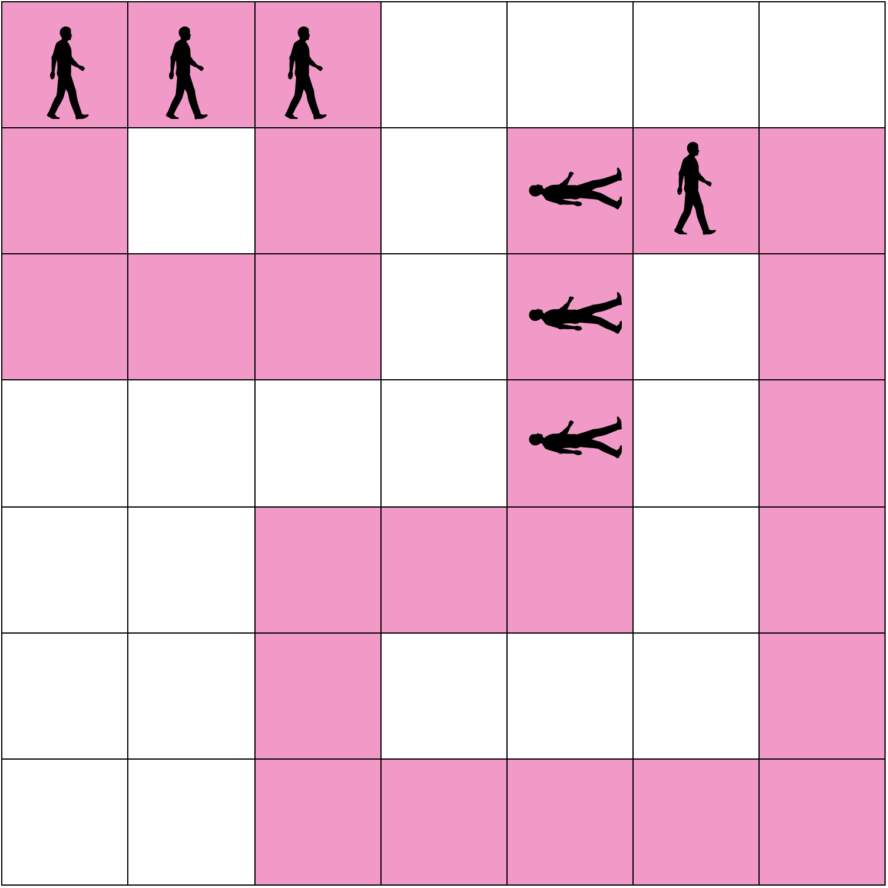
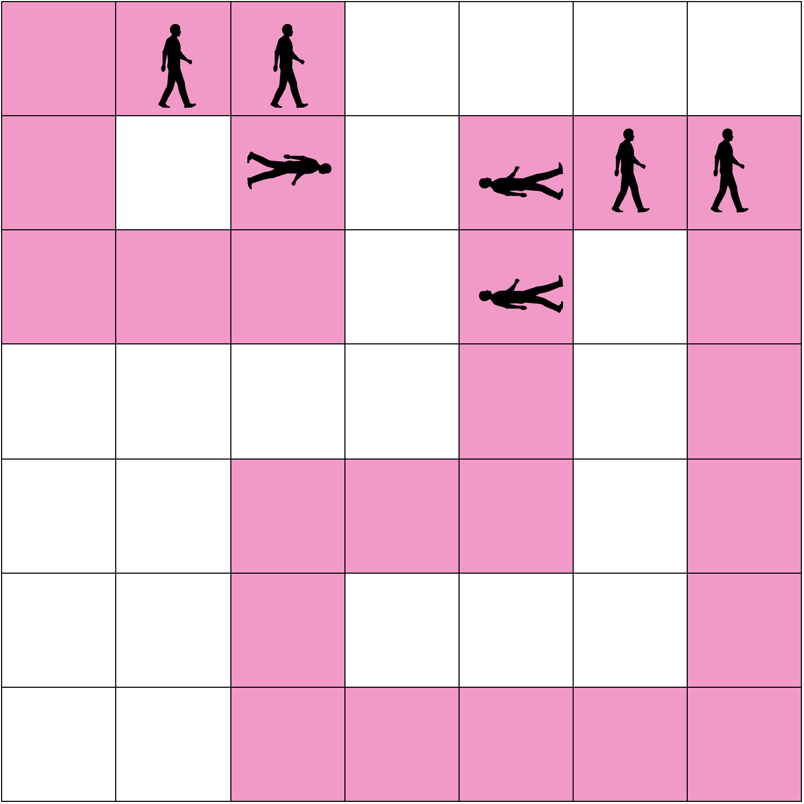
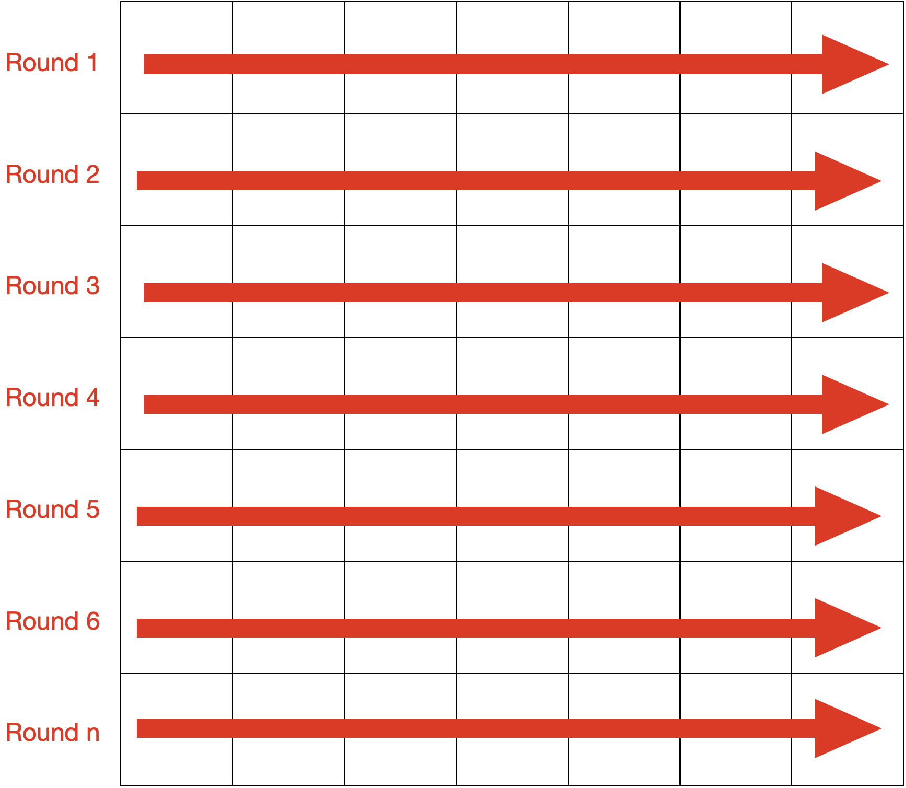
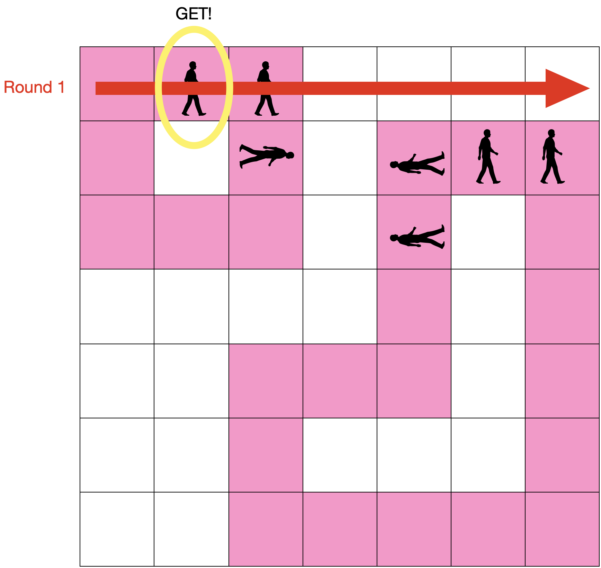
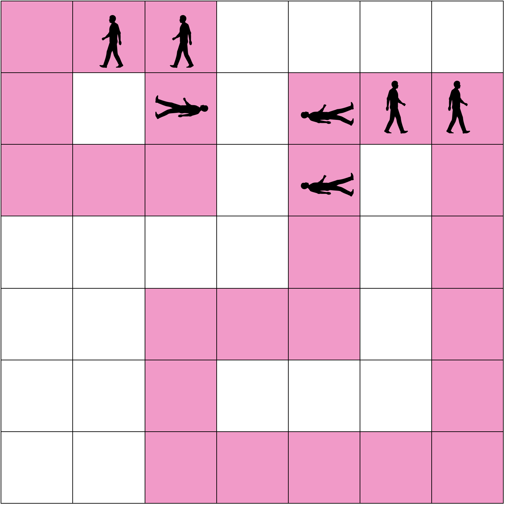
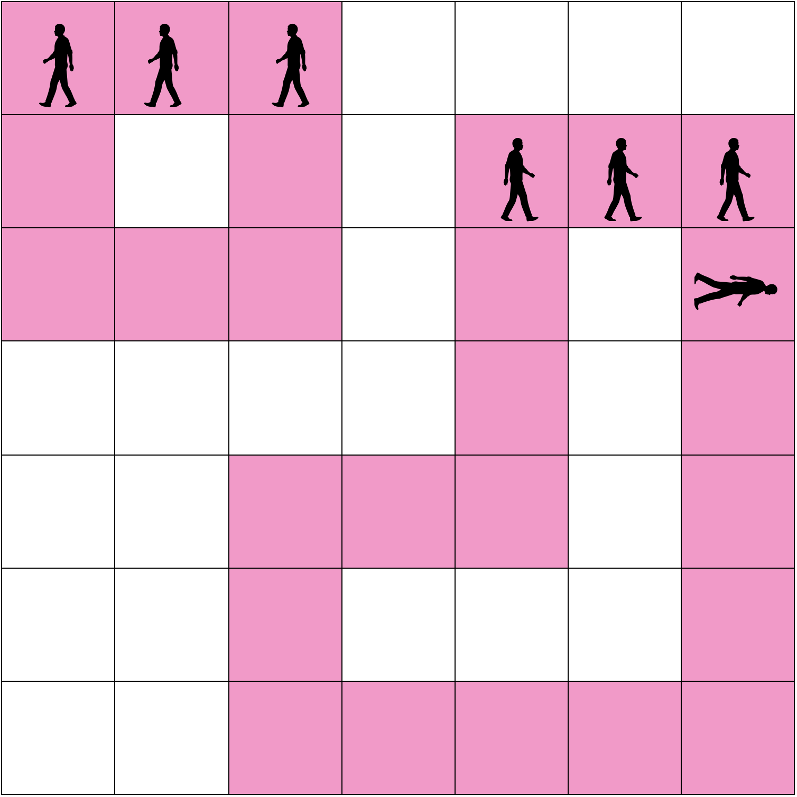
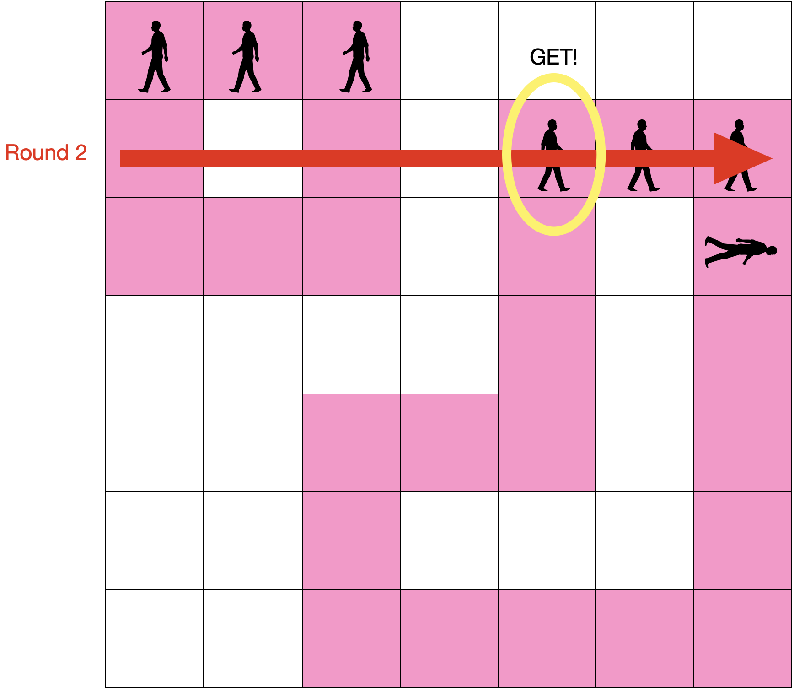
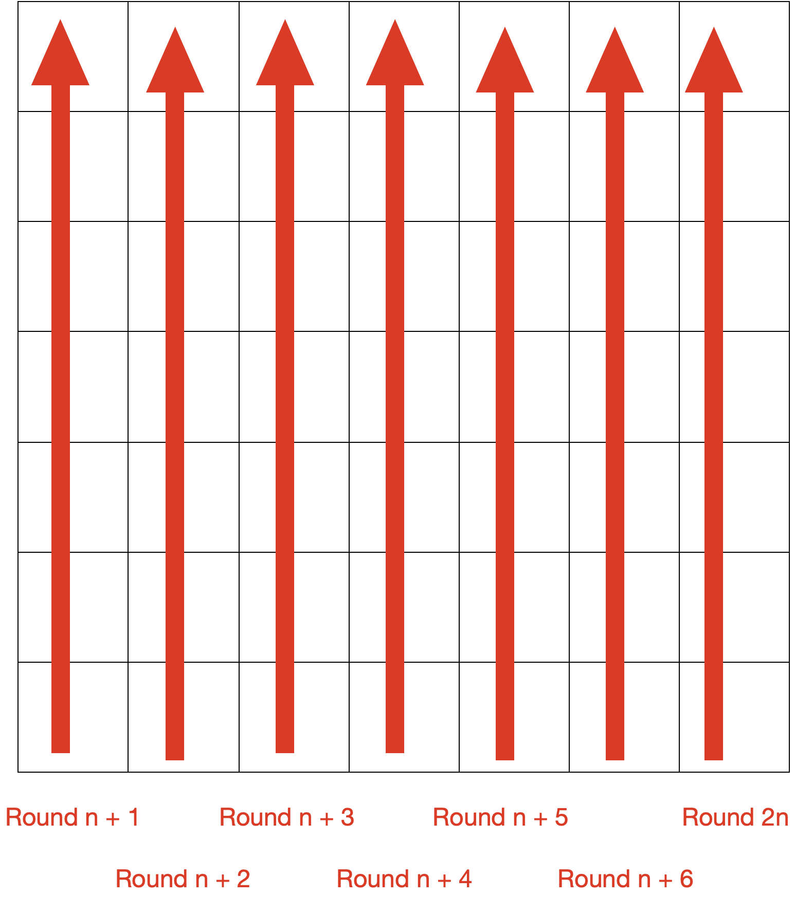
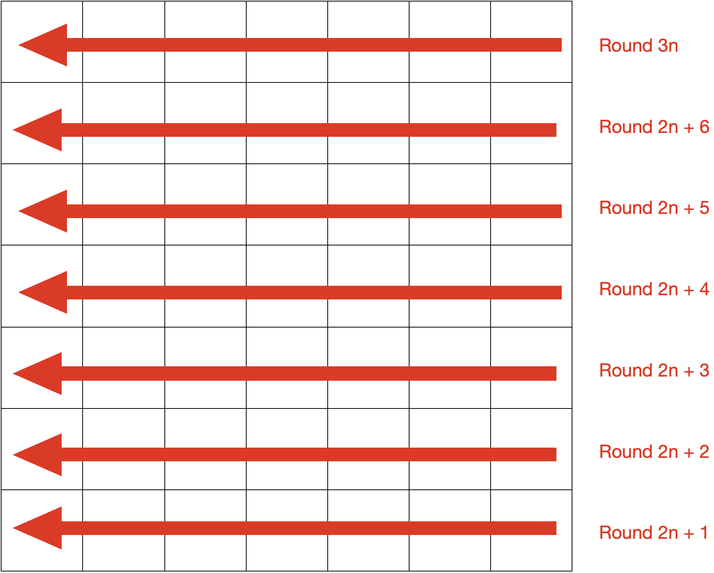
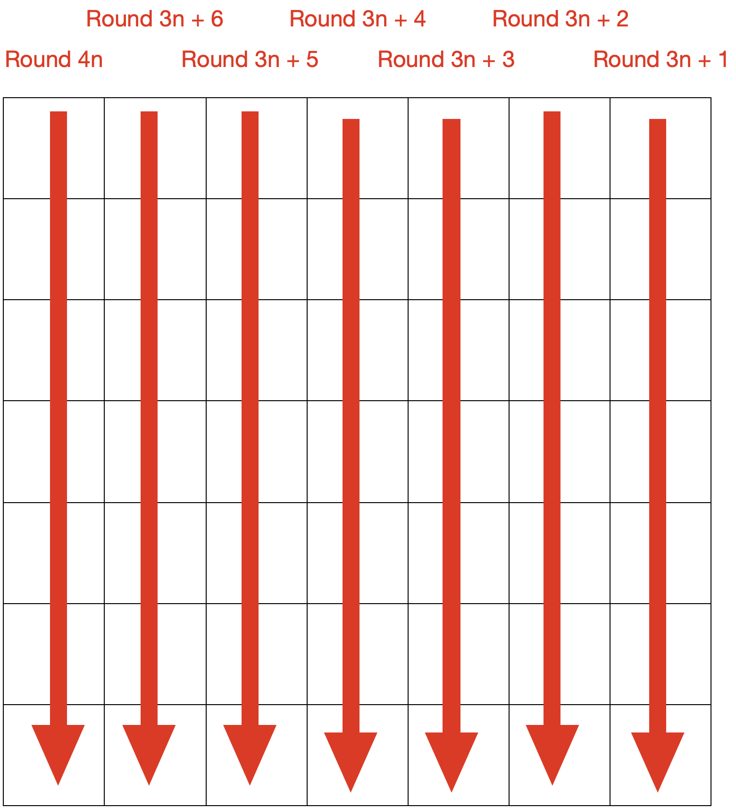

n * n 격자에서 꼬리잡기놀이를 진행합니다. 꼬리잡기놀이는 다음과 같이 진행됩니다.
3명 이상이 한 팀이 됩니다. 모든 사람들은 자신의 앞 사람의 허리를 잡고 움직이게 되며, 맨 앞에 있는 사람을 머리사람, 맨 뒤에 있는 사람을 꼬리사람이라고 합니다. 각 팀은 게임에서 주어진 이동 선을 따라서만 이동합니다. 각 팀의 이동 선은 끝이 이어져있습니다. 각 팀의 이동 선은 서로 겹치지 않습니다.
다음과 같이 초기 조건이 주어질 수 있습니다.
게임은 라운드 별로 진행이 되며, 한 라운드는 다음과 같이 진행됩니다.
- 먼저 각 팀은 머리사람을 따라서 한 칸 이동합니다. 
- 각 라운드마다 공이 정해진 선을 따라 던져집니다. n개의 행, n개의 열이 주어진다고 했을 때 공이 던져지는 선은 다음과 같습니다. 
- 공이 던져지는 경우에 해당 선에 사람이 있으면 최초에 만나게 되는 사람만이 공을 얻게 되어 점수를 얻게 됩니다. 점수는 해당 사람이 머리사람을 시작으로 팀 내에서 k번째 사람이라면 k의 제곱만큼 점수를 얻게 됩니다. 아무도 공을 받지 못하는 경우에는 아무 점수도 획득하지 못합니다. 위의 예시에서 1라운드는 다음과 같이 진행됩니다. 
- 다음 라운드는 다음과 같이 진행됩니다.
- 라운드가 끝난 후 
- 모든 팀 1칸 이동 
- 공 발사(+ 16점) 



4n번째 라운드를 넘어가는 경우에는 다시 1번째 라운드의 방향으로 돌아갑니다.
머리사람에서 3번째에 있는 사람이 공을 얻었기 때문에 9(3 * 3)점을 획득하게 됩니다. 공을 획득한 팀의 경우에는 머리사람과 꼬리사람이 바뀝니다. 즉 방향을 바꾸게 됩니다.
총 격자의 크기, 각 팀의 위치, 각 팀의 이동 선, 총 진행하는 라운드의 수가 주어질 때 각 팀이 획득한 점수의 총합을 구하는 프로그램을 구하세요.
입력 형식
첫 번째 줄에 격자의 크기 n, 팀의 개수 m, 라운드 수 k가 공백을 사이에 두고 주어집니다.
이후 n개의 줄에 걸쳐 각 행에 해당하는 초기 상태의 정보가 공백을 사이에 두고 주어집니다. 0은 빈칸, 1은 머리사람, 2는 머리사람과 꼬리사람이 아닌 나머지, 3은 꼬리사람, 4는 이동 선을 의미합니다.
이동 선의 각 칸은 반드시 2개의 인접한 칸만이 존재하고, 하나의 이동 선에는 하나의 팀만이 존재한다고 가정해도 좋습니다.
- 3 ≤ n ≤ 20
- 1 ≤ m ≤ 5
- 1 ≤ k ≤ 1000
출력 형식
k번의 라운드 동안 각 팀이 얻게되는 점수의 총합을 출력합니다.
입출력 예제
예제 1
입력 :
7 2 1
3 2 1 0 0 0 0
4 0 4 0 2 1 4
4 4 4 0 2 0 4
0 0 0 0 3 0 4
0 0 4 4 4 0 4
0 0 4 0 0 0 4
0 0 4 4 4 4 4
출력 :
9
예제 2
입력 :
7 2 1
3 2 1 0 0 0 0
4 4 4 0 2 0 4
4 4 4 0 2 0 4
0 0 0 0 3 0 4
0 0 4 4 4 0 4
0 0 4 0 0 0 4
0 0 4 4 4 4 4
출력 :
25
제한
시간제한 : 1000ms
메모리 제한 : 80MB